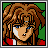
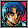
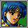
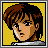
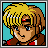
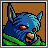
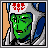
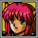

NOXIUM ELYSIUM > root:psiv/techniques.html
Techniques in Phantasy Star IV are a variety of special abilities that characters can use to deal damage, heal allies, or provide support in battle. These abilities are similar to magic in other RPGs and play a crucial role in combat strategy. Techniques range from offensive attacks that target enemies to defensive and healing abilities that keep the party in fighting shape. Mastering the use of techniques is essential for overcoming tougher foes and surviving challenging encounters.
Using techniques requires Technique Points (TP), which function as the game's version of a magic meter. Each technique consumes a specific amount of TP when cast, and once a character's TP is depleted, they can no longer use their techniques until they replenish their points. Managing TP effectively is important, as running out of points can leave the party vulnerable in the midst of a battle.
There are several ways to replenish TP in Phantasy Star IV. Characters can use restorative items like 'Trimate' or rest at an inn to recover their TP fully. Knowing when to use techniques and when to conserve TP is a key part of maintaining a balanced strategy and keeping the party prepared for anything that lies ahead.
Damage • Status Inflict • Support
DAMAGE
| FOI |    | Unleashes a flame attack that strikes a single enemy, dealing fire-based damage. |
| GIFOI | Releases a powerful fire attack that targets a single enemy, inflicting significant fire-based damage. | |
| NAFOI | Generates an intense fire explosion that hits a single enemy, dealing substantial fire-based damage. | |
| WAT |  | Unleashes a blast of ice that strikes a single enemy, dealing ice-based damage. |
| GIWAT | Generates a powerful wave of ice that targets a single enemy, inflicting significant ice-based damage. | |
| NAWAT | Creates a chilling torrent of ice that hits a single enemy, dealing substantial ice-based damage. | |
| TSU |  | Unleashes a bolt of lightning that strikes a single enemy, dealing lightning-based damage. |
| GITHU | Generates a powerful surge of electricity that targets a single enemy, inflicting significant lightning-based damage. | |
| NATHU | Creates a devastating flash of lightning that hits a single enemy, dealing substantial lightning-based damage. | |
| ZAN | Unleashes a gust of wind that attacks all enemies, dealing wind-based damage. | |
| GIZAN | Generates a powerful cyclone that targets all enemies, inflicting significant wind-based damage. | |
| NAZAN | Creates a fierce tempest that strikes all enemies, dealing substantial wind-based damage. | |
| GRA | Unleashes a gravity attack that strikes all enemies, dealing gravity-based damage. | |
| GIGRA | Generates a powerful gravity wave that targets all enemies, inflicting significant gravity-based damage. | |
| NAGRA | Creates a devastating gravitational force that hits all enemies, dealing substantial gravity-based damage. | |
| MEGID | Powerful light technique that damages all enemies on the battlefield, dealing significant light-based damage. Obtained on Rykros. |
STATUS INFLICT
| BROSE |  | Instantly defeats all affected enemies with a powerful force. |
| VOL | Defeats a single enemy instantly if successful. | |
| SAVOL | Defeats multiple enemies instantly if successful. | |
| GELUN | Reduces the strength of all affected enemies, making them weaker in battle. | |
| DORAN | Reduces the agility of all affected enemies, causing them to move slower in combat. | |
| SEALS |  | Prevents enemies from using techniques, effectively silencing their abilities in battle. |
| RIMIT | Inflicts paralysis on all affected enemies, rendering them unable to act. |
SUPPORT
| RES |  | Restores a moderate amount of HP to a single ally, aiding them in the heat of battle or during downtime. |
| GIRES | Channels a powerful healing force to mend the wounds of a single ally, restoring significant HP. | |
| NARES | Unleashes a potent healing energy to fully rejuvenate a single ally, restoring a substantial amount of HP. | |
| SAR | Sends out a wave of healing energy to revitalize all allies, aiding them in overcoming damage quickly. | |
| GISAR | Casts a stronger wave of healing to renew the health of all allies, providing a vital boost during tough battles. | |
| NASAR | Calls upon an immense surge of healing power to restore the vitality of all allies, keeping the team battle-ready. | |
| SHIFT | Enhances the attack power of a single ally, sharpening their strength to unleash more powerful strikes. | |
| SANER | Boosts the agility of all allies, allowing them to move with lightning speed and evade enemy attacks. | |
| DEBAN | Reinforces the defenses of all allies, fortifying their ability to withstand enemy blows. | |
| ANTI | Neutralizes poison from a single ally, purging their system of toxic effects. | |
| RIMPA | Removes paralysis from a single ally, restoring their mobility in battle. | |
| REVER | Revives a fallen ally, bringing them back into the fight with renewed vigor. | |
| REVER | Revives a fallen ally, bringing them back into the fight with renewed vigor. | |
| REGEN | Fully resurrects a fallen ally, restoring them to peak condition as if they were never down. | |
| AROWS | Dispels the effects of sleep from all allies, waking them up to face the threats ahead. | |
| RYUKA | Instantly transports the party to a previously visited town, making quick travel effortless. | |
| HINAS | Transports the party to the dungeon's entrance, making a swift exit possible in moments of need. |